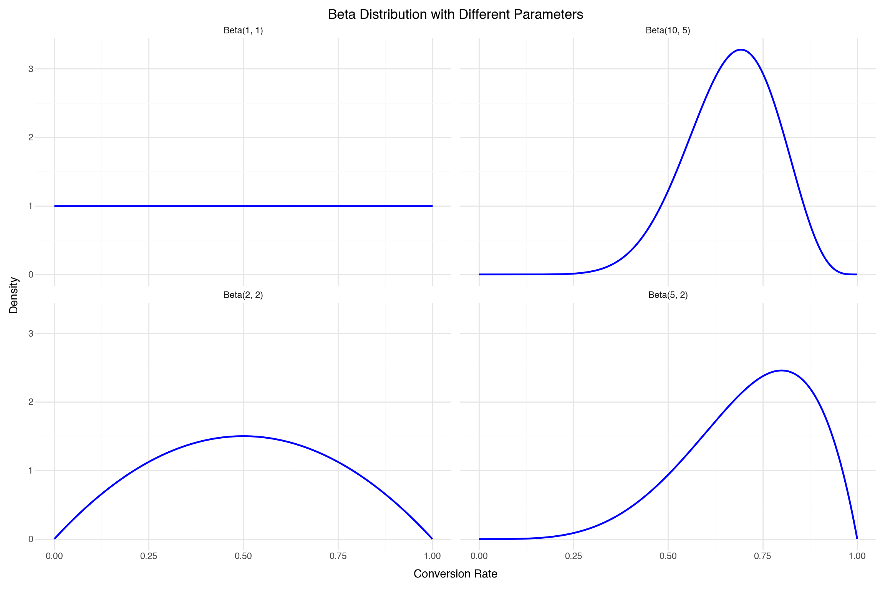
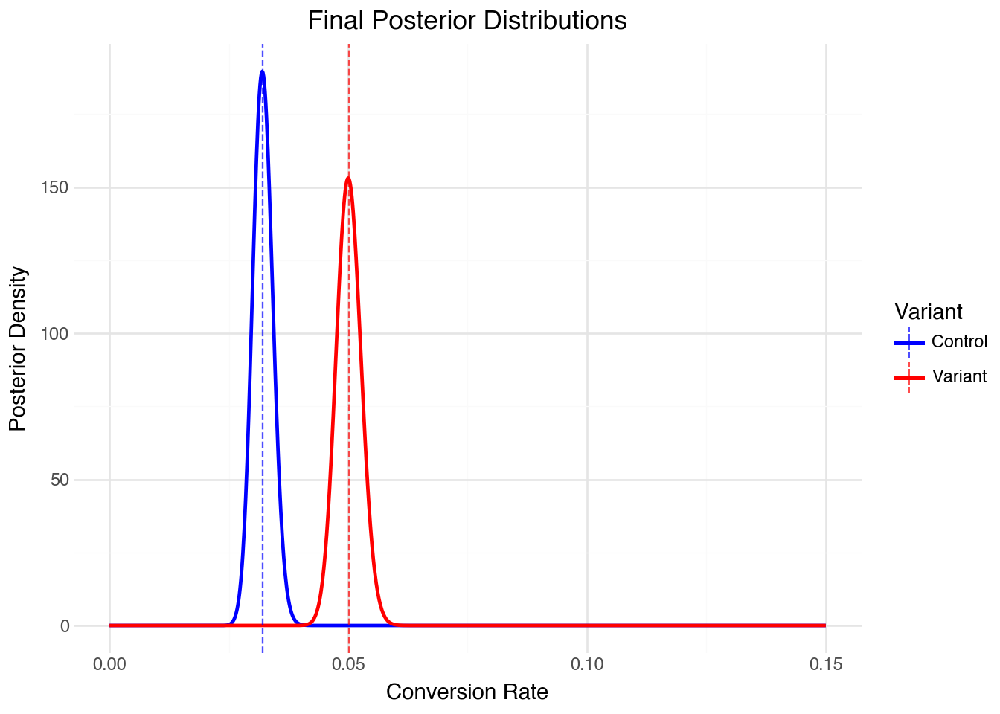
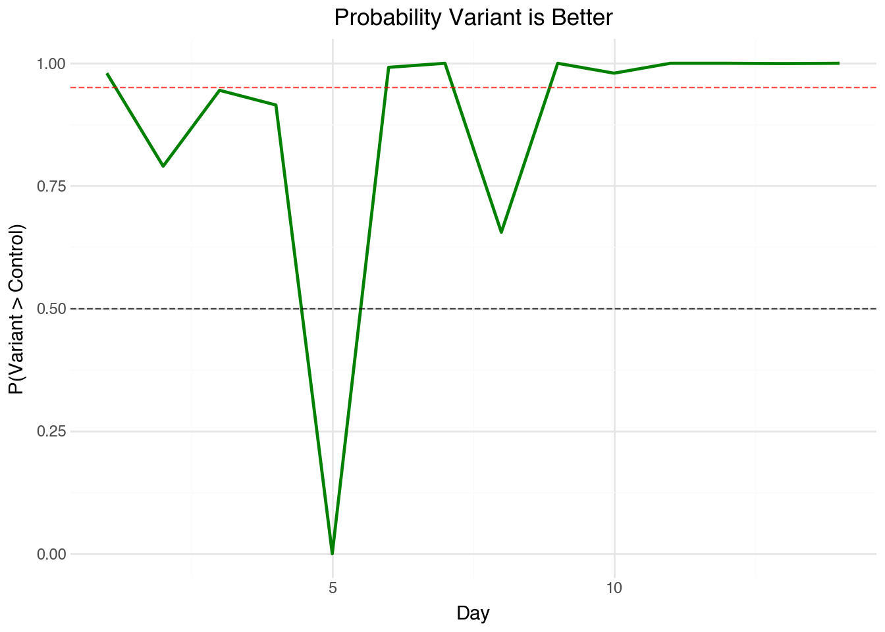
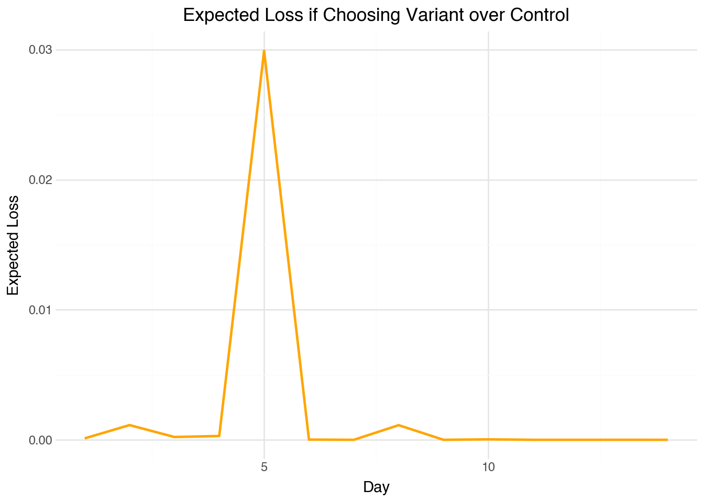
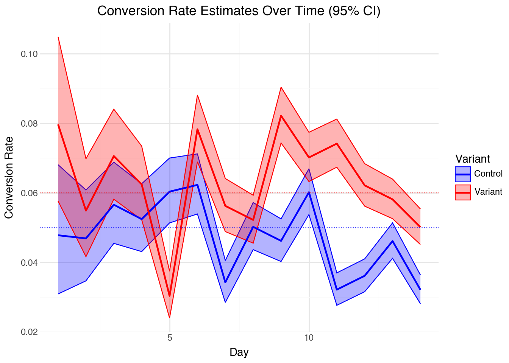

When deploying new features to production we want the confidence that our change produces positive outcomes. We should always monitor reliability metrics such as latency and response rates as well as business outcomes such as conversion rate. These values can vary due to outside factors, e.g. more people are visiting the site due to an unrelated marketing campaign which results in higher-latency and hence reduced conversion rate - this could lead us to believe our new feature has caused a drop in conversion and we revert to the previous version erroneously.
In A/B testing we deploy two (or more) versions of out product, app or website simultaneously and ensure users only ever see one of these versions consistently, even when visiting on two separate occaissions. We can then compare the performance of variants directly. We can use this when deploying new ML models or Agentic/AI models. Typically we’d measure a business outcome (or an easier/faster to measure proxy-metric) and evaluate it for each variant and compare them using an A/B test - note that when we consider non-deterministic (i.e. probabilistic) features then the variance of outcomes is higher and we may need a larger sample-size to get definitive results.
Mathematical Justification for the Beta-Binomial
Bernoulli Distribution
In A/B testing, each user interaction can be modeled as a Bernoulli trial with parameter \(p\) representing the success probability. For a single user:
\[X \sim \text{Bernoulli}(p)\]
The probability mass function is: \[P(X = x) = p^x (1-p)^{1-x}, \quad x \in \{0, 1\}\]
where \(x = 1\) indicates success and \(x = 0\) indicates failure.
Binomial Distribution
When we observe \(n\) independent users, the total number of successes \(Y\) follows a binomial distribution:
\[Y \sim \text{Binomial}(n, p)\]
The probability mass function is: \[P(Y = y) = \binom{n}{y} p^y (1-p)^{n-y}, \quad y \in \{0, 1, 2, \ldots, n\}\]
Where \(\binom{n}{y}\) is the binomial coefficient, \(\frac{n!}{y!(n-y)!}\). In this context it represents the number of ways we can choose \(y\) elements from a set of \(n\) elements.
Beta Prior Distribution
We model our prior belief about the success rate using a Beta distribution:
\[p \sim \text{Beta}(\alpha, \beta)\]
The probability density function is: \[f(p) = \frac{\Gamma(\alpha + \beta)}{\Gamma(\alpha)\Gamma(\beta)} p^{\alpha-1} (1-p)^{\beta-1}, \quad p \in (0, 1)\] where \(\Gamma(x) = (x-1)!\) for positive integer values of x.
We choose the Beta distribution because it has support on \((0, 1)\), which makes it appropriate for probabilities. We can also calculate the posterior distribution analytically as we’ll see in the next section.
Substituting our likelihood and prior: \[f(p | y) = \frac{\binom{n}{y} p^y (1-p)^{n-y} \cdot \frac{\Gamma(\alpha + \beta)}{\Gamma(\alpha)\Gamma(\beta)} p^{\alpha-1} (1-p)^{\beta-1}}{f(y)}\] The denominator is the marginal likelihood: \[f(y) =\sum_y \binom{n}{y} p^y (1-p)^{n-y} \cdot \frac{\Gamma(\alpha + \beta)}{\Gamma(\alpha)\Gamma(\beta)} p^{\alpha-1} (1-p)^{\beta-1}\] Let’s group the terms in the numerator and spot the kernel of a Beta distribution:
\[\begin{aligned}f(p|y) &\propto p^{\alpha+y-1}(1-p)^{\beta + n-y-1} \\
&= \text{Beta}(\alpha + y, \beta + n - y)
\end{aligned}\]
We say the Beta distribution is conjugate to the Binomial distribution, this is nice because we don’t have to do any complex numerical integration to calculate our posterior distributions for the success probability. The figure below shows the beta distribution for a variety of values of \(\alpha\) and \(\beta\).
We can write the posterior distribution as a python function and it should be equivalent to the build in pdf in scipy.stats.beta.
from scipy.special import factorialdef _gamma_function(x):"""Helper function to compute the gamma function."""return factorial(x-1)def beta_pdf(x, alpha, beta):"""Probability density function of the Beta distribution.""" coeff = _gamma_function(alpha + beta) / (_gamma_function(alpha) * _gamma_function(beta))return coeff * (x ** (alpha -1)) * ((1- x) ** (beta -1))beta_pdf(0.5, 2, 5), stats.beta.pdf(0.5, 2, 5) # Should be the same
The figure below shows the Beta distribution with a variety of different parameters.

Choosing between variant A and B
Now that we have know the form of the posterior distribution for each arm of the experiment we can think about how to use this to make decisions. We can calculate the posterior distribution of the success probability for each arm, \(A\) and \(B\), of the experiment and then compare them.
We first define a Pydantic record class to hold the data for our trials, then we can calculate the probability that variant A has a higher conversion rate than variant B by sampling from the posterior distribution and calculating the mean of \(p_b > p_a\) - we can calculate summary statistics like this whenever we have samples from a distribution.
from pydantic import BaseModelimport numpy as npfrom scipy import statsclass ABTestData(BaseModel): trials_a: int successes_a: int trials_b: int successes_b: int prior_alpha: float=1.0 prior_beta: float=1.0def _posterior_samples(data: ABTestData, n_samples: int):# Posterior parameters for variant A alpha_a = data.prior_alpha + data.successes_a beta_a = data.prior_beta + data.trials_a - data.successes_a# Posterior parameters for variant B alpha_b = data.prior_alpha + data.successes_b beta_b = data.prior_beta + data.trials_b - data.successes_b# Sample from posterior distributions samples_a = np.random.beta(alpha_a, beta_a, n_samples) samples_b = np.random.beta(alpha_b, beta_b, n_samples)return samples_a, samples_bdef probability_better(samples_a, samples_b) ->float:return np.mean(samples_a > samples_b)
Another way we can decide between variant A over variant B is to define a loss function. A symmetric loss function to calculate the loss for choosing B, when variant A is better \(\mathbb{E}(\max(0, p_a - p_b))\).
def expected_loss(samples_a, samples_b) ->tuple[float, float]:# Expected loss for choosing A when B is better loss_a = np.mean(np.maximum(0, samples_b - samples_a))# Expected loss for choosing B when A is better loss_b = np.mean(np.maximum(0, samples_a - samples_b))return loss_a, loss_b
Running the Experiment
Let’s simulate an A/B test comparing two landing page variants - we’ll simulate visitors arriving over a period of two weeks.
First we plot the final posterior distributions of the probability of conversion for each arm of the A/B test
select the final day of results_history
calculate the parameters of the posterior beta distribution
use stats.beta.pdf to calculate the probability density function for a range of 1,000 values from \([0, 0.15]\).

Stopping Criterion
We can now plot the stopping criterion, first the probability that the Variant is better than Control.

Second, the expected loss over time

There is another stopping criteria we haven’t yet mentioned - we can stop when the credible intervals of the posterior probabilities no longer overlap. Let’s plot the 95% credible interval over the duration of the experiment. To calculate the credible interval we can use stats.beta.interval or we can use monte-carlo sampling as we did in the other stopping criteria: np.percentile(samples, 95).

Conclusion
Bayesian A/B testing with the beta-binomial model provides a principled, intuitive framework for conversion rate experiments. Unlike frequentist methods, we can look at results whenever we want and have early stopping out of the box without complex adjustments. The downside to this method is that it’s challenging to provide relevant prior information so in practice we mostly use \(\text{Beta}(1, 1)\) and (as in all A/B tests) we make a decision once and never change our minds. Often changes will simply revert to the mean! If we want to continuously make optimization decisions we can use a multi-armed bandit which can direct traffic dynamically to different variants by either exploring (randomly choosing an arm of the bandit) or exploiting (choosing the arm which is the current best performer). In this way if the best performer starts to regress then continued feedback would result in a new best performer being selected.
Citation
BibTeX citation:
@online{law2025,
author = {Law, Jonny},
title = {Bayesian {A/B} {Testing}},
date = {2025-09-21},
langid = {en}
}
For attribution, please cite this work as:
Law, Jonny. 2025. “Bayesian A/B Testing.” September 21.
![]()